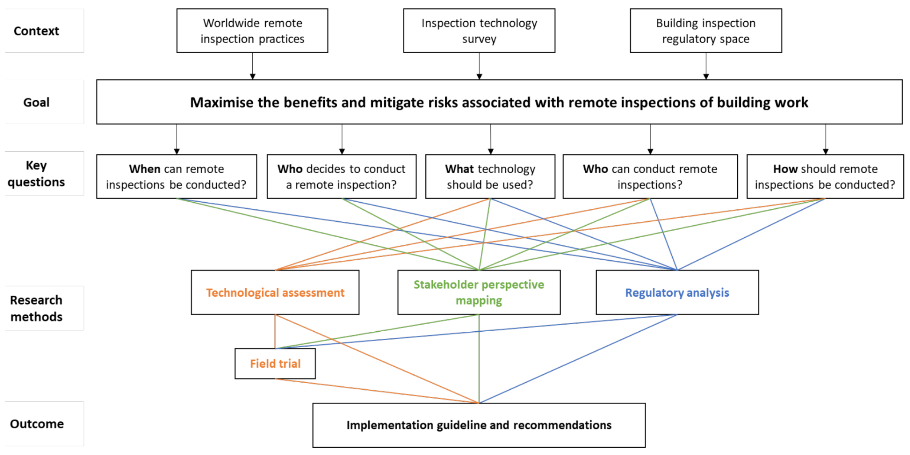
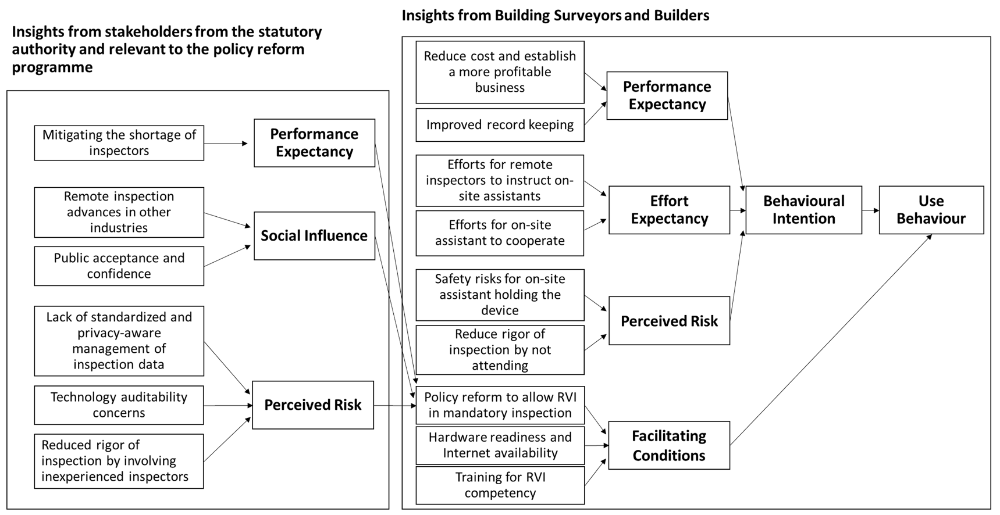

This project evaluated how emerging digital technologies can support remote and virtual inspections of building work. Conventional in-person inspections can be constrained by travel, time, inspector availability, safety risks, and growing regulatory demand. The project investigated how technologies such as video-based inspection, reality capture, sensors, digital platforms, and automated data processing can assist inspectors in collecting evidence, extracting information, and assessing compliance remotely. It reviewed international practices, assessed the suitability of different technologies for inspecting diverse building elements, and examined their capabilities for real-time operation, automation, and integration into regulatory workflows. The research also considered stakeholder acceptance, perceived risks, and policy implications for implementation in building regulatory activities. The outcomes provide evidence-based guidance for selecting and deploying remote inspection technologies while maintaining inspection integrity, regulatory confidence, and practical usability for industry and government.

